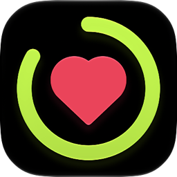

ACLS Leader tiene i tempi dell'arresto cardiaco dell'adulto (linee guida AHA 2025 o ERC 2025) su iPhone, iPad, iPhone Duo e Apple Watch e una guida con corso di ECG.
Domande, problemi o idee: scrivi a alessandro.appstudio@gmail.com. Rispondiamo di solito entro due giorni lavorativi. Dall'app: Impostazioni › Informazioni › "Segnala un problema o proponi una funzione" (la versione viene aggiunta da sola).
L'Apple Watch continua quando abbasso il polso? Sì, durante un arresto in corso l'app resta attiva e vibra a fine ciclo e per i farmaci.
Il metronomo si sente a schermo bloccato? Sì, su iPhone, finché l'arresto è in corso e il suono è attivo.
Dove sono i miei dati? Solo sui tuoi dispositivi. Vedi l'informativa sulla privacy.
ACLS Leader è uno strumento di supporto per professionisti sanitari formati e per la formazione. Non è un dispositivo medico e non sostituisce il giudizio clinico, la formazione certificata né i protocolli della tua struttura. Non è affiliata né approvata da AHA o ERC.
ACLS Leader keeps the time during adult cardiac arrest (AHA 2025 or ERC 2025 guidelines) on iPhone, iPad, iPhone Duo and Apple Watch, with a guide including an ECG course.
Questions, problems or ideas: write to alessandro.appstudio@gmail.com. We usually reply within two working days. In the app: Settings › About › "Report a problem or suggest a feature".
Does the Apple Watch keep going when I lower my wrist? Yes, during an active code the app stays active and taps you at the end of each cycle and for drugs.
Can I hear the metronome with the screen locked? Yes, on iPhone, while a code is active and sound is on.
Where is my data? Only on your devices. See the privacy policy.
ACLS Leader is a support and training tool for trained healthcare professionals. It is not a medical device and does not replace clinical judgment, certified training or your institution's protocols. Not affiliated with or endorsed by AHA or ERC.
Fragen, Probleme oder Ideen: alessandro.appstudio@gmail.com. In der App: Einstellungen › Info › „Problem melden oder Funktion vorschlagen“. Datenschutz.
Unterstützungs- und Schulungswerkzeug für medizinisches Fachpersonal. Kein Medizinprodukt; ersetzt weder klinisches Urteil noch zertifizierte Ausbildung oder lokale Protokolle.
Questions, problèmes ou idées : alessandro.appstudio@gmail.com. Dans l'app : Réglages › Informations › « Signaler un problème ou proposer une fonction ». Confidentialité.
Outil d'aide et de formation pour professionnels de santé formés. Ce n'est pas un dispositif médical ; il ne remplace ni le jugement clinique, ni la formation certifiée, ni les protocoles de votre établissement.
Preguntas, problemas o ideas: alessandro.appstudio@gmail.com. En la app: Ajustes › Información › «Informar de un problema o proponer una función». Privacidad.
Herramienta de apoyo y formación para profesionales sanitarios formados. No es un producto sanitario y no sustituye el juicio clínico, la formación certificada ni los protocolos de tu centro.
问题、故障或建议：alessandro.appstudio@gmail.com。隐私政策。
面向受过培训的医护人员的辅助与培训工具。不是医疗器械，不能替代临床判断、认证培训或所在机构的规程。